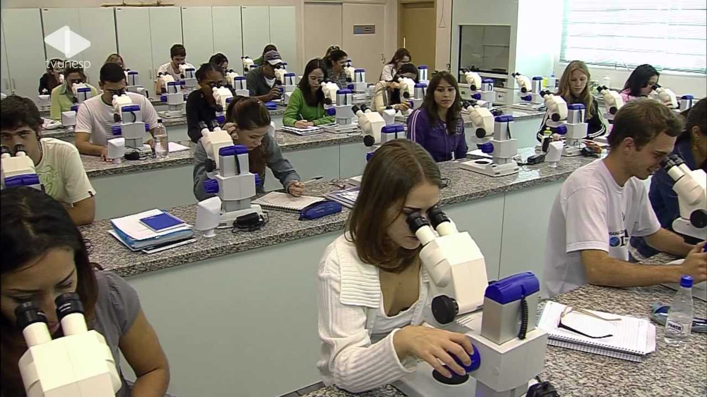

Muitas pessoas não sonham somente em estudar, mas também em trabalhar fora do país. Por isso, separamos
algumas profissões e os melhores destinos para exercê-las.

1. BIOLOGIA
O Canadá investe muito em pesquisas ligadas ao meio ambiente, tornando-o um dos melhores
países para ser biólogo. Uma das coisas mais importantes para se conseguir um emprego em outro país é o domínio
do idioma falado no lugar, que no caso do Canadá é o francês e/ou inglês, além de ser necessário ter uma
formação prévia, como o mestrado, pré-doutorado ou o título de Bacharel, dependendo da área da profissão que
você pretende atuar. Uma coisa que pode te ajudar muito na hora de conseguir uma vaga é uma Carta de
Recomendação, mas ela precisa estar em inglês. Além do currículo, você precisa também de uma carta de
apresentação (ou cover letter), que é uma carta na qual você diz o porque é a melhor pessoa para ocupar o cargo
porque está motivado a trabalhar na empresa e como poderá contribuir para o seu desenvolvimento.
2. MEDICINA
Medicina é constantemente uma opção considerada pelos estudantes. A competição pelas vagas
nas universidades nacionais é absurda e, portanto, a opção de fazer Medicina no exterior pode ser um caminho
mais fácil para a graduação. Existem muitas razões para estudar Medicina no exterior. A qualidade no sistema de
saúde de um país é um dos principais motivos, assim como a qualidade da educação. O custo pode ser outro motivo,
já que existem muitas opções acessíveis para estudar no exterior. Estudar Medicina no exterior não deve ser
considerado uma opção "fácil". Você vai estudar em um curso desafiador em outro país durante (pelo menos) cinco
a seis anos de sua vida.
A América Latina é o destino mais escolhidos pelos brasileiros para estudar Medicina. Isso ocorre devido à
proximidade com o Brasil e o baixo preço nas mensalidades. Na parte sul do continente, os países mais desejados
são: Argentina, Paraguai, Colômbia, Bolívia e Cuba. Além disso, há também a oportunidade de ingressar em
universidades públicas, que, assim como no Brasil, não cobram mensalidade.
3. FOTOGRAFIA
New York é um dos melhores destinos para se estudar fotografia. Uma das melhores escolas
da cidade é o Instituto New York of Photography, Esta é uma escola de fotografia tradicional, que foi fundada em
1910, e possui uma ótima reputação. A escola oferece cinco cursos de fotografia: NYIP Curso de Fotografia
Profissional, Photoshop para fotógrafos, o curso completo na tomada de vídeo e cotação de histórias, Marketing
para fotógrafos e Os fundamentos da fotografia digital. Um fator bom dessa escola é que os cursos permitem os
alunos aprenderem online, podendo estudar a distância.
4. GASTRONOMIA
A França é um dos países mais famosos quando se trata de gastronomia. O país possui uma
grande variedade de formações, indo de profissionais que cuidam da qualidade do vinho até os que são
responsáveis por oferecer refeições rápidas para consumo. Uma das melhores instituições do país é a Le Cordon
Bleu, que possui mais de 120 anos de tradição, além de possuir programas de especialização espalhados por
diversos países, como Peru, Londres, Madrid, Estados Unidos e outros. Lá, o estudante tem a oportunidade de
estudar com grandes chefes de cozinha, que ensinam diversas técnicas da profissão.
5. MODA
A Itália é muito famosa pela sua moda, que é muito importante para a economia do país. Os
tecidos italianos sāo muito procurados, pois destacam pela sua sofisticação e pela qualidade da mão de obra. A
Itália se tornou um grande berço da industria da moda, vendo que marcas como Gucci, Giorgio Armani, Valentino,
Prada, Dolce & Gabbana, Versace e Fendi são italianas. Existem agencias que podem te ajudar a conseguir bolsa de
estudos para estudar moda e design na Itália.